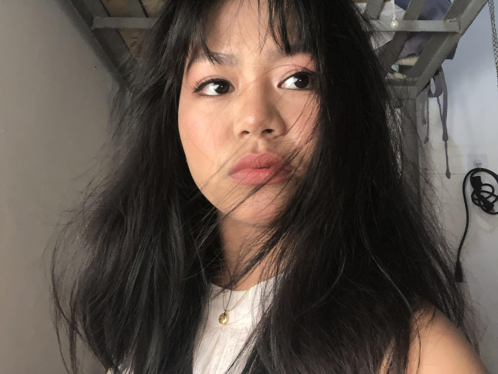

"When life is hard, trust God."
Hello! I'm Dionese I. Antioquia, a future web developer based in Libon, Albay. I specialize in creating responsive and user-friendly websites.
My journey began with a curiosity for technology and problem-solving. Since then, I've had the opportunity to work on various projects, from simple static sites to dynamic web applications. I'm always eager to take on new challenges and collaborate with like-minded individuals.
When I'm not coding, you can find me reading tech blogs, playing video games, or hiking. I believe in continuous learning and the power of technology to make a positive impact.